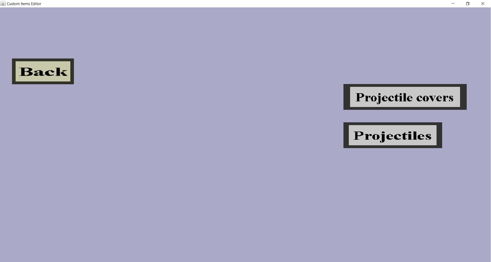

The projectile portal is a very simple menu from which you can either go to the projectile overview, the projectile cover overview or go back to the item set edit menu. It should look like this:
Custom projectiles are probably the most complicated part of this plug-in, so I will give some explanation. Custom projectiles can be fired by (custom) wands (special custom items). Custom projectiles are similar to normal projectiles in the sense that they can be launched, fly through the air, hit obstacles and deal damage, but there are also differences: custom projectiles can have a lot of configurable effects and are invisible by default and need projectile covers or particle effects to make them visible.